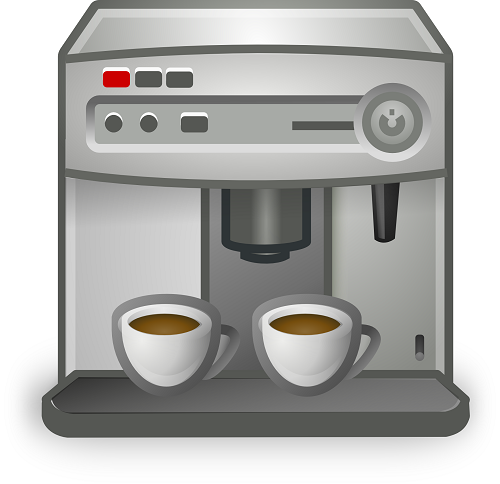
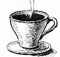
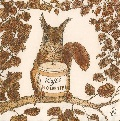
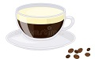
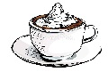

 D’abord inventé par les anglais, avant d’être perfectionnée par les italiens au XXe siècle, l’espresso est un café moulu finement et infusé avec de l’eau à une pression de 9 bars.
 Très simple et tout aussi populaire, le café noisette est un expresso dans lequel on ajoute une goutte de lait, prenant alors une couleur noisette.
 Le ristretto n’est autre qu’une version plus corsée de l’espresso. La préparation est similaire, si ce n’est que le ristretto est pressé plus fort et a donc besoin de beaucoup moins d’eau.
 Il s’agit d’un espresso dans lequel on rajoute un nuage de crème ou de lait. Cette boisson est préférée par ceux trouvant un gout trop fort à l’expresso classique.